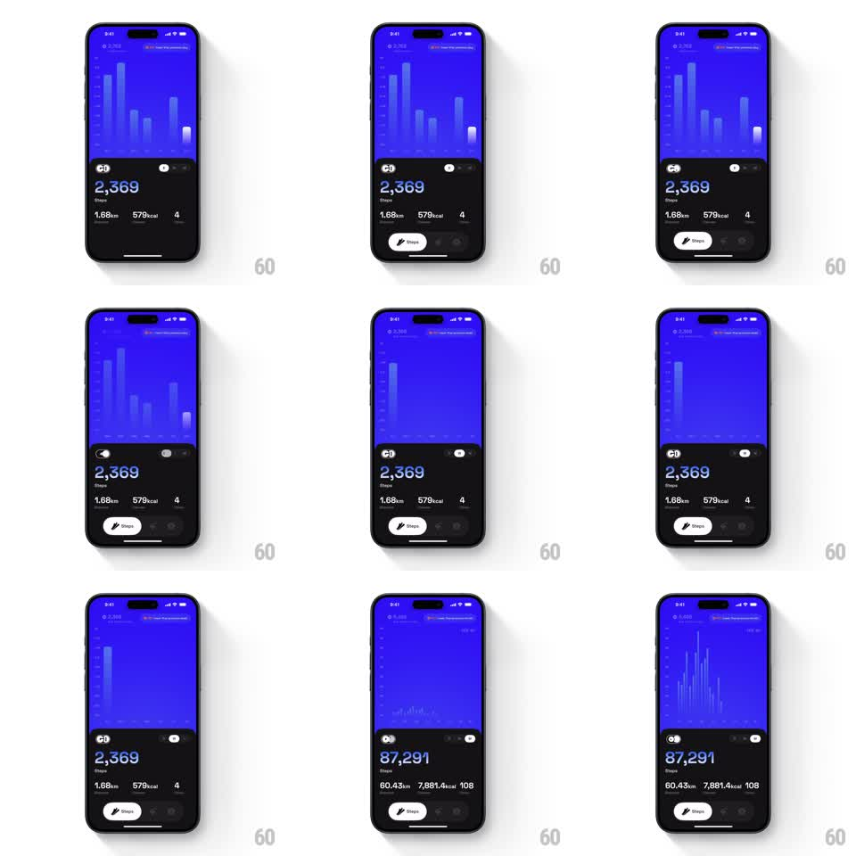

Media
Frame-by-frame

Rebuild this animation 1:1: GO Club's range switch - toggling the dashboard from weekly to monthly stats morphs the bar chart (bars collapse out and the new set grows in) while the totals roll up with an odometer ticker.

Rebuild this animation 1:1: GO Club's range switch - toggling the dashboard from weekly to monthly stats morphs the bar chart (bars collapse out and the new set grows in) while the totals roll up with an odometer ticker.
## Integration
Integration: stack-agnostic spec - springs given as stiffness/damping, timed motions as duration + curve; map every value to your framework and animation library of choice.
## Scene
Dark fitness dashboard: blue bar-chart panel on top (period total + range label above it), stats block below - huge step count ("2,369" weekly / "87,291" monthly), distance, kcal, streak row, Steps pill button, toggle icons.
## Motion spec
Pattern: chart morph + ticker roll, ~700ms.
- Toggle: outgoing bars shrink vertically to zero height, staggered 30ms left to right (250ms each, ease-in).
- Incoming bars grow from the baseline, staggered 30ms left to right (300ms each, ease-out with a 5% overshoot at the tip).
- The stats roll: step count digits odometer-roll to the new total with travel blur (400ms, ease-out); distance, kcal, streak follow staggered 50ms.
- Range label crossfades (150ms).
## Calibration
- Outgoing collapse finishes before incoming growth passes 50% - overlapping sets read as chart junk.
- Bar count differs per range (7 vs 30); never crossfade bar-to-bar, always collapse-then-grow.
## Reduced motion
Whole chart panel crossfades (250ms); numbers change without rolling.
## Don't miss
- The baseline axis is fixed; bars animate height only, never position.
- The ticker rolls even when the user spams the toggle - cancel mid-roll and start from the current displayed value, not the old target.